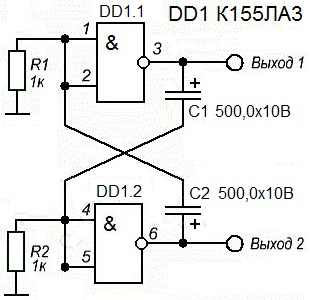

Исследование работы мультивибратора на микросхеме К155ЛА3
Мультивибратор на микросхеме К155ЛА3 (рис. 1) внешне весьма схожа с типовой схемой мультивибратора на транзисторах. Единственно, что тут в роли функциональных элементов использованы логические элементы микросхемы К155ЛА3, подключенные инверторами.
Емкости С1, С2 формируют 2 цепи положительной обратной связи:
- первая цепь: вход DD1.1 - емкость С2 - выход DD1.2.
- пторая цепь: вход DD1.2 - емкость С1 - выход DD1.1.
Из-за этих связей схема самовозбуждается, что приводит к возникновению импульсов. Частота импульсов определяется сопротивлением R1, R2 и номиналами емкостей в цепях обратной связи К155ЛА3.

Рис. 1 - Схема мультивибратор на микросхеме К155ЛА3
Для изучения выходных сигналов желательно использовать логический пробник или стрелочный вольтметр. При тех номиналах, которые указаны на схеме, частота импульсов составит около 30 раз в минуту или примерно 0,5 Гц.
Следовательно, стрелка вольтметра, подсоединенного, к примеру, к выходу DD1.2 микросхемы К155ЛА3, будет двигаться от 0 и почти до 5 В. Если подсоединить вольтметр к выходу DD1.1 микросхемы К155ЛА3 можно увидеть точно такую же картину. Поэтому данный вид мультивибратора назван симметричным.
Если к каждому конденсатору параллельно подключить еще по одному такому же, то можно заметить, что частота колебаний стрелка вольтметра снизилась примерно в 2 раза. Если теперь заменить первоначальные конденсаторы конденсаторами по 200 мкФ, то сразу будет заметно увеличение частоты колебаний.
А что выйдет, если поменять емкость всего лишь одного конденсатора? К примеру, один конденсатор заменим на 100 мкф, а другой оставим как есть 500 мкФ. Частота заметно возрастет, но еще плюс ко всему изменится отношение паузы и импульсов. Уменьшив емкость до 1…5 мкф, схема будет вырабатывать звуковую частоту в районе 500…1000 Гц.
Если один из постоянных резисторов убрать и на его место поставить переменный, то изменяя его сопротивление можно в небольшом диапазоне изменять частоту работы мультивибратора.
Но, бывает, что мультивибратор функционирует нестабильно или вообще не запускается. А все дело в том, что эмиттерный вход микросхем К155ЛА3 достаточно зависим от сопротивления резисторов, находящихся в его цепи. Эта специфика эмиттерного входа микросхемы К155ЛА3 состоит в следующем. Резистор на входе включен как составная часть одного из плеч мультивибратора. Из-за тока эмиттера на данном резисторе появляется напряжение, которое запирает транзистор.
Если же сопротивление данного резистора будет в диапазоне 2…2,5 кОм, то падение напряжения на нем окажется значительным, и это приведет к тому, что транзистор элементарно перестанет обрабатывать входной сигнал. И наоборот, если установить сопротивление в диапазоне 500…700 Ом, то транзистор окажется постоянно в открытом состоянии.
В связи с этим, сопротивление данных резисторов следует подбирать в диапазоне 800…2200 Ом. Только так возможно достичь стабильной работы мультивибратора на К155ЛА3, построенный по данной схеме. Так же на работу данного мультивибратора действуют такие моменты, как нестабильность питания, температура. От того мультивибратор на К155ЛА3, построенный по такой схеме фактически используется крайне редко.
Источники
joyta.ru - Мультивибратор на двух элементах микросхемы К155ЛА3
Никулин С.А., Повный А.В. Энциклопедия начинающего радиолюбителя